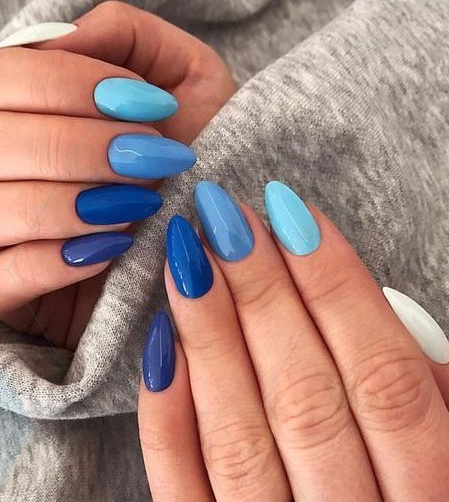
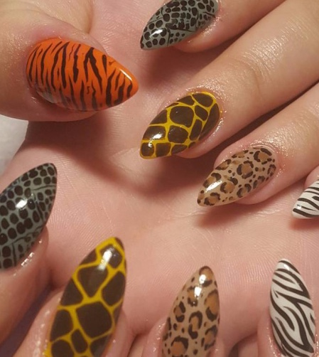
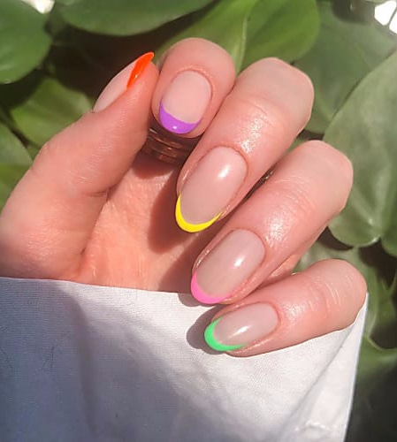

|  | Gradient These nails are super easy and can be done right from your home! Using multiple shades of the same color creates an illusion of subtly shifting colors. It is like creating a paint sample on your hand. This trend is also referred to as mix & match and ombré. Whatever you want to call it, it's super cute and trendy! |
|  | Animal Print This technique is a bit more complicated to do and requires a steady hand. Animal print has been all the rave for a while now with fashion, so why not bring it over to nails! Tiger, leopard, snake, zebra, and cow print are all fun to work with. Mix it up and use a ton of prints, as seen in the picture to the left, or stick with one. Below is a fun tutorial by YoungNailsInc. |
|  | Colored Tips These nails are very similar to a French manicure. It's super simple and the pop of color adds a nice touch. Pastel tips are very popular right now, but you can do any colors you'd like! It would also be fun to mix it with the gradient technique. Add some sparkle to the tips or the full nail for something a little more fancy! |